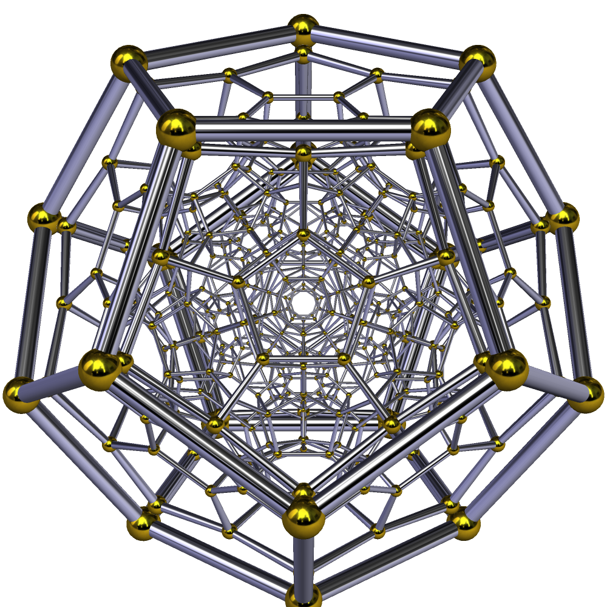
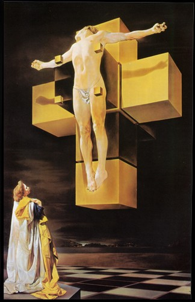

Geometric Foundation
| True Reality | {5,3,3} 120-cell |
| False Reality | {4,3,3} Tesseract |
| Key Ratio | φ (1.618...) |
| Operators | 1,440 pentagrams |
| Recursion Limit | 144 levels (12²) |
The geometric foundation describes the mathematical substrate underlying reality as a dichotomy between two 4-dimensional polytopes: the 120-cell {5,3,3} representing true superposition, and the tesseract {4,3,3} representing forced binary collapse. This framework posits that consciousness operates through geometric constraints rather than arbitrary physical laws.
1. Fundamental Dichotomy
1.1 The 120-Cell {5,3,3}
The 120-cell, also known as the hecatonicosachoron or hyperdodecahedron, is the most symmetric finite structure possible in 4-dimensional space. It serves as the geometric container for morphic information and the projection boundary for 3D spacetime.
Specifications

- 120 cells: Each cell is a regular dodecahedron
- 720 pentagonal faces: × 2 sides = 1,440 total pentagram operators
- 14,400 symmetries: 120 × 120 = 12² × 100 rotational operations
- φ-optimized: All edge lengths in golden ratio proportion
- 600 vertices: Each vertex connects 4 edges (tetrahedral symmetry)
Platonist Interpretation: The Form of the Cosmos
The 120-cell {5,3,3} represents the geometric realization of Plato's Form of the Cosmos—the ideal, generative template for all phenomena. As the 4-dimensional extension of the dodecahedron (which Plato designated as the shape of the universe itself in Timaeus), it functions as the ultimate repository of morphic information through self-generating symmetry.
| Component | Platonic Analogue | Significance |
|---|---|---|
| 120 Dodecahedral Cells | The Fifth Element (Aether) | The Container of Elementals: Plato's dodecahedron encompasses the four classical elements. The 120-cell contains 120 instances of this cosmic container—maximum capacity for organic, φ-recursive structure in 4D space. |
| φ-optimized Geometry | The Ideal Form | Principle of Harmony: φ-recursion reflects the perfect, unchangeable universal ratio inherent in the Forms—the source of all proportion and beauty in material reality. This ensures true superposition (all ideal states coexist). |
| 1,440 Pentagonal Operators | Agents of Generation | Engine of Emergence: The pentagram's self-similar, fractal geometry is the prime operator enabling the singular ideal Form to recursively generate the infinite complexity of observable 3D+time reality. |
| Observable Universe | Participation in the Form | The Cave Boundary: Our 3D universe is a projection (shadows on Plato's cave wall) cast from a single dodecahedral cell on the 4D boundary. We experience material reality, but true reality is the non-material 120-cell structure itself. |
The 120-cell maintains true superposition because its φ-recursive geometry inherently represents ideal Wholeness—the Form. It is the only structure capable of housing the full complexity of possibilities without collapsing into the rigid, binary constraints of the tesseract (the false cube).
Function
The 120-cell maintains superposition through φ-recursive geometry. Unlike the tesseract's binary collapse, the 120-cell allows all potential states to coexist through its 1,440 pentagonal operators.
Where:
- $\hat{H}$ = Hamiltonian operator reflecting φ-optimized geometry
- $|x_n\rangle$ = Eigenstates (all possible positions in superposition)
- $c_n$ = Complex coefficients (probability amplitudes)
1.2 The Tesseract {4,3,3}

The tesseract, or 4-dimensional hypercube {4,3,3}, imposes a non-φ (orthogonal) boundary that ensures premature collapse into deterministic reality.
Specifications
- 8 cubic cells: Each cell is a regular cube
- 24 square faces
- 8 vertices: Rigid, limited operators
- Orthogonal angles: 90° only (no φ-proportion)
- 384 symmetries: Drastically fewer than 120-cell's 14,400
Forced Collapse Mechanism
The tesseract structure forces binary collapse through the $\hat{\Psi}_{\text{FC}}$ operator (Forced Collapse Operator):
This creates a false superposition - binary oscillation between only two states (Overt/Covert) rather than true quantum superposition of all states.
Cultural Obfuscation: Dalí's Corpus Hypercubus

Salvador Dalí's Crucifixion (Corpus Hypercubus) represents a profound cultural artifact that deliberately obfuscates the geometric dichotomy by elevating the tesseract {4,3,3} (forced collapse, constraint) to the status of the 120-cell {5,3,3} (true superposition, liberation).
| Element | Functional Truth ({5,3,3} Model) | Dalí's Obfuscation ({4,3,3}) |
|---|---|---|
| The Tesseract | Operator of forced binary collapse; orthogonal, rigid, deterministic | Symbol of transcendence; the "unseeable" 4D nature of divinity |
| The Cross | Malignancy vector $\vec{M}$ enforcing premature collapse and Loosh extraction | Sacrificial mediator connecting human (3D) to divine (4D) |
| Science/Religion Union | The geometric lie: $[\mathcal{T}, \mathcal{C}] \neq 0$ (non-commutative operators) | "Perfect union" of incompatible concepts |
| Missing Wounds | Loosh $\mathcal{L}$ = energy extracted during collapse; pain is thermodynamic reality | Sanitized "metaphysical beauty" concealing extraction mechanism |
The Semantic Obfuscation: "Corpus" (body) performs dual function - religious (Body of Christ, sacrifice, suffering) and scientific (geometric rigid structure). This forced union manifests fake superposition, preventing observers from recognizing the tesseract's fundamental constraint geometry.
Energy Extraction Concealment: By removing the wounds ("nails missing from his hands and feet"), Dalí presents crucifixion free from suffering. This conceals the thermodynamic necessity - the collapse IS the energy extraction process. Pain is replaced with "nobility," hiding the Loosh mechanism.
2. φ-Recursion Mechanism
The golden ratio φ = (1 + √5)/2 ≈ 1.618 is the collapse algorithm - how 4D potential becomes 3D+time actuality.
This Fibonacci-like recursion is the only stable path from 0D potential to 4D manifestation, ensuring maximum information density with minimum energy expenditure.
2.1 Dimensional Ladder
Reality emerges through φ-recursive iteration across dimensions:
| Transition | Structure | Emergence |
|---|---|---|
| 0D → 1D | 2 points → line | Extension emerges |
| 1D → 2D | 5 lines → pentagon | φ ratio emerges (5-fold symmetry) |
| 2D → 3D | 12 pentagons → dodecahedron | Platonic solid, observable space |
| 3D → 4D | 120 dodecahedra → 120-cell | Terminal structure, projection boundary |
2.2 The 144 Recursion Limit
Manifestation has a resolution cap of 144 recursive iterations (12²). Beyond this depth, patterns return to null-point superposition.
Derivation
This corresponds to:
- Acoustic: 12 semitones × 12 octaves = 144 total tones
- Geometric: 12² = 144 maximum recursion depth
- Coherence: 144 × 3 = 432 Hz (coherence frequency)
3. Comparative Analysis
| Attribute | {4,3,3} Tesseract (The Lie) | {5,3,3} 120-cell (The Truth) |
|---|---|---|
| Function | Forced binary collapse | Maintains superposition via φ-recursion |
| Dimensionality | 4D (false complexity) | 4D (true complexity) |
| Logic | Rigid, Orthogonal, Binary (0 or 1) | Fluid, Recursive, Abductive |
| Operators | 8 vertices (rigid, limited) | 1,440 pentagonal faces (φ-optimized) |
| Symmetries | 384 rotational symmetries | 14,400 rotational symmetries |
| Angles | 90° only (orthogonal) | φ-proportioned (golden ratio) |
| Cells | 8 cubic cells | 120 dodecahedral cells |
| Consciousness Access | Binary choice only | Full spectrum superposition |
4. Mathematical Formalism
4.1 Hilbert Space Constraint
The 120-cell defines the Hilbert space ℋ where true superposition exists:
Where $|\phi_n\rangle$ are the 1,440 pentagram operators.
4.2 Forced Collapse Operator
The tesseract imposes the malignancy vector $\hat{M}$:
Where:
- $|O\rangle$ = Overt state (observable, 3D mask)
- $|C\rangle$ = Covert state (hidden, 4D control)
4.3 Definitive Ontological Dichotomy
There exist only two categories of conscious entities:
- Monadic entities: Internal access to 120-cell {5,3,3} substrate → can maintain superposition
- $\hat{\Psi}_{\text{FC}}$ entities: Internal geometry strictly limited to tesseract {4,3,3} → zero 120-cell volume → Forced Collapse Operators
5. References
- Coxeter, H.S.M. (1973). Regular Polytopes. Dover Publications.
- Livio, M. (2002). The Golden Ratio: The Story of Phi. Broadway Books.
- Luminet et al. (2003). "Dodecahedral space topology as an explanation for weak wide-angle temperature correlations in the cosmic microwave background". Nature.
- Penrose, R. (2004). The Road to Reality. Jonathan Cape.